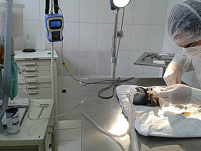
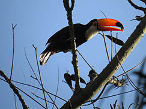

O Zoológico de Guarulhos, criado em 1981, mantém cerca de 500 animais, de 100 diferentes espécies, priorizando a fauna nacional, com 91% de espécies nativas. O Zoo participa de programas de conservação de espécies ameaçadas, realiza pesquisas científicas e atividades de educação para conservação. Os animais recebem cuidados constantes, tanto preventivos como curativos, por uma equipe de biólogos, veterinários e tratadores, incumbidos da manutenção de sua saúde e bem estar.
A estrutura do zoo conta com 59 recintos de exposição, setor extra e quarentenário, que abrigam os animais residentes e animais recém-chegados e em tratamento. Há no local clínica veterinária e área de manejo, com salas de atendimento, laboratório, sala de cirurgia, área de internação e sala de necropsia, e também um setor de alimentação e biotério para produção de alimentos vivos.


O Zoo possui uma área de mata e lagos que atraem muitas espécies de aves de vida livre, que podem ser observadas e fotografadas facilmente, tornando o passeio ainda mais agradável.
